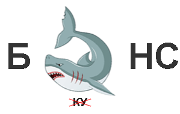
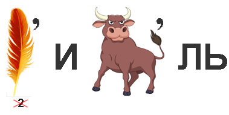

🧩 Ребусы
🟢 Уровень 1: Лёгкий
5

6

7

📍 Этап 1: Экономические ребусы
📍 Этап 2: Экономические тезисы
📍 Этап 3: Экономические кроссворды
Длительность: 2 академических часа (90 минут)
Формат: Командная игра с балльной системой оценивания
Год: 2025
Активизация познавательной деятельности студентов, закрепление экономических знаний через интерактивные игровые форматы, развитие командного взаимодействия и повышение мотивации к изучению экономических дисциплин.
Время: 10 минут
Формирование команд, выбор названия команд, объяснение правил
Время: 70 минут
Решение ребусов, тезисов и кроссвордов по уровням сложности
Время: 10 минут
Подсчет баллов, объявление победителей, рефлексия
Баллы начисляются за правильные ответы в зависимости от уровня сложности задания. Команды могут получить бонусные баллы за скорость выполнения.
| Этап | Уровень сложности | Баллы за ответ | Бонус за скорость |
|---|---|---|---|
| Ребусы | 🟢 Лёгкий | 100 | +20 (если < 1 мин) |
| 🟡 Средний | 200 | +40 (если < 2 мин) | |
| 🔴 Сложный | 300 | +60 (если < 3 мин) | |
| Тезисы | 🟢 Базовый | 100 | +50 (за объяснение) |
| 🟡 Средний | 200 | +50 (за объяснение) | |
| 🔴 Сложный | 300 | +50 (за объяснение) | |
| Кроссворды | 🟢 Лёгкий | 50 за слово | +100 (весь кроссворд за 10 мин) |
| 🟡 Средний | 100 за слово | +200 (весь кроссворд за 15 мин) | |
| 🔴 Сложный | 150 за слово | +300 (весь кроссворд за 20 мин) |
Команда "Экономисты":
Итого: 1980 баллов
Ребус — это загадка, в которой экономический термин зашифрован в виде комбинации рисунков, символов, букв и цифр. Разгадывая ребусы, участники тренируют логическое мышление и закрепляют знание профессиональной терминологии.
Закрепить экономическую терминологию через визуальное и ассоциативное представление понятий, развить навыки нестандартного мышления и создать прочные ассоциации для запоминания.
Закрепить правописание и значение ключевых экономических терминов через активное припоминание.
Развивать аналитическое мышление, концентрацию внимания и способность выдвигать и проверять гипотезы.
Формировать умение работать в команде, настойчивость в достижении цели и интерес к интеллектуальному труду.

Экономические тезисы — это утверждения об экономических принципах и закономерностях, которые могут быть верными или неверными. Задача участников — определить истинность утверждения и объяснить свой выбор.
Формирование четкого понимания ключевых экономических концепций, развитие критического мышления и способности применять теоретические знания на практике.
Закрепить основы экономической теории и сформировать навык анализа экономических данных.
Развить способность к самостоятельному формированию выводов и аргументации своей позиции.
Воспитать уважительное отношение к научным достижениям и мотивацию к непрерывному самообразованию.
1. Цена товара определяется только затратами на его производство.
2. Альтернативная стоимость — это стоимость наилучшей упущенной возможности при выборе из нескольких вариантов.
3. Чем больше в стране денег, тем богаче страна.
4. Цена на товар стремится к точке, где количество товара, которое хотят купить покупатели, совпадает с количеством, которое хотят продать продавцы (равновесие спроса и предложения).
5. Бесплатное образование и медицина не имеют никакой альтернативной стоимости для общества.
6. Инфляция — это устойчивое повышение общего уровня цен на товары и услуги в экономике за определенный период.
1. Монополии всегда устанавливают максимально возможную цену, какую только могут придумать.
2. Сравнительное преимущество показывает, что странам выгодно торговать, даже если одна из них производит все товары более эффективно.
3. Международная торговля — это игра с нулевой суммой: выигрыш одной страны означает проигрыш другой.
4. Конкуренция между фирмами, как правило, способствует снижению цен и повышению качества товаров для потребителей.
5. Рост ВВП всегда означает улучшение благосостояния всех граждан страны.
6. Эластичность спроса показывает, насколько сильно изменение цены влияет на объем спроса.
1. Любое государственное вмешательство в экономику вредно и приводит к неэффективным результатам.
2. Экономический рост в долгосрочной перспективе определяется в основном ростом производительности труда и технологическим прогрессом.
3. Природные ресурсы — главный и единственный фактор богатства страны.
4. Рыночная экономика может "проваливаться" в таких ситуациях, как наличие внешних эффектов, общественных благ или асимметрии информации.
5. Государственный бюджет, как и семейный, всегда должен быть сбалансирован, а дефицит — это всегда плохо.
6. Права собственности, верховенство закона и низкий уровень коррупции являются ключевыми институтами для долгосрочного экономического развития.
Кроссворд — это словесная головоломка, в которой нужно заполнить пересекающиеся клетки буквами, образующими слова-ответы на заданные вопросы. В нашем случае все вопросы связаны с экономической тематикой.
Закрепление знаний ключевых экономических понятий и терминов, формирование устойчивого запоминания через увлекательную игровую форму.
Повторить и активировать учебный материал по основным экономическим категориям, расширить словарный запас профессиональных терминов.
Тренировать мыслительные операции (классификация, обобщение), укрепить навыки быстрого извлечения информации из памяти.
Привить интерес к предмету экономики и позитивное отношение к процессу обучения, стимулировать активную умственную деятельность.
Мероприятие "Экономический марафон" представляет собой эффективное сочетание интеллектуальных, творческих и соревновательных элементов в образовательном процессе.
Этап 1: Экономические ребусы — визуализация сложных экономических понятий через образное мышление
Этап 2: Экономические тезисы — критическое осмысление актуальных экономических вопросов и развитие аналитических навыков
Этап 3: Экономические кроссворды — практическое применение теоретических знаний для закрепления терминологии
Такой формат мероприятия способствует созданию ситуации успеха для студентов, повышению учебной дисциплины и развитию навыков коллективного творчества. Рекомендуется проводить подобные марафоны регулярно для поддержания высокого уровня вовлеченности студентов в учебный процесс.
Пусть экономический марафон принесёт новые знания, яркие эмоции и командный дух!